1. The First Reflow and Bench Bring-up (Mk1 iv7.1)
Assembly began with board revision iv7.1 — a 4-layer, 1 mm PCB with pre-baked SAC305 paste and 0402 passives assembled by JLCPCB. Main ICs were hand-soldered or hot-aired on the bench.
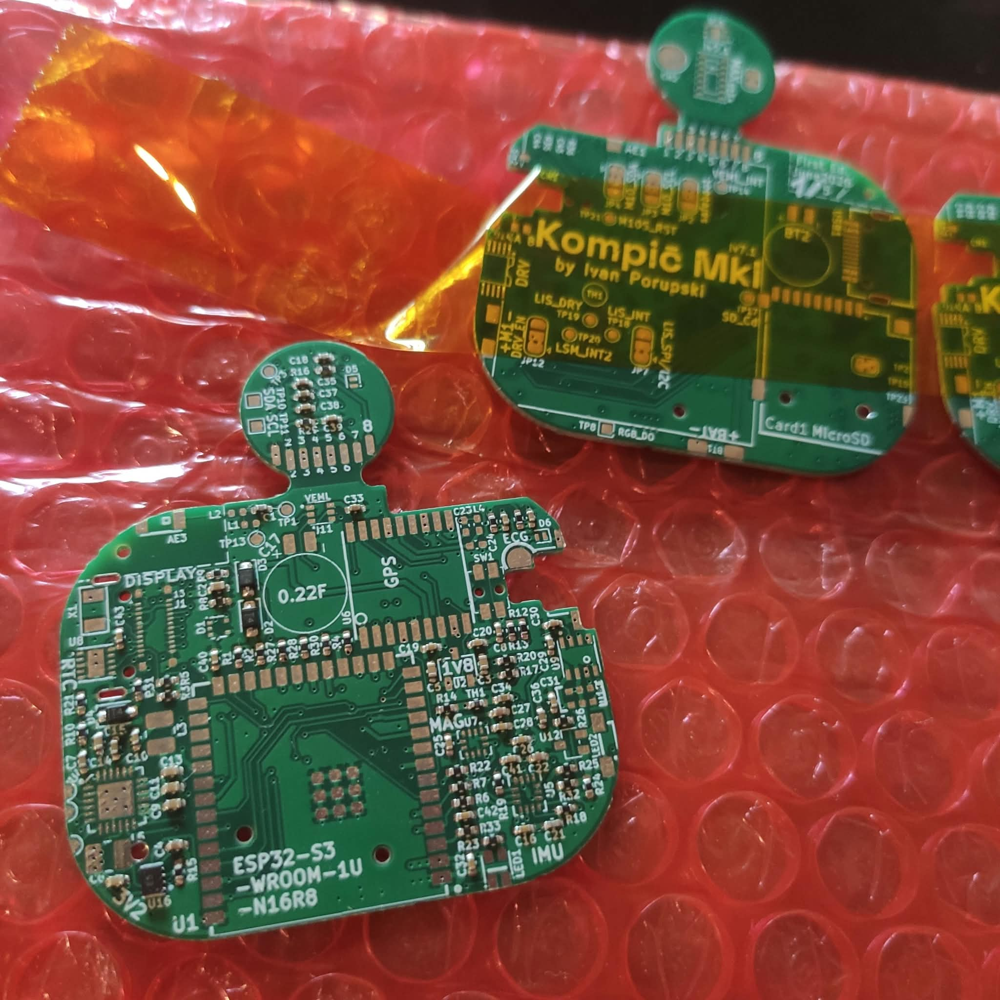
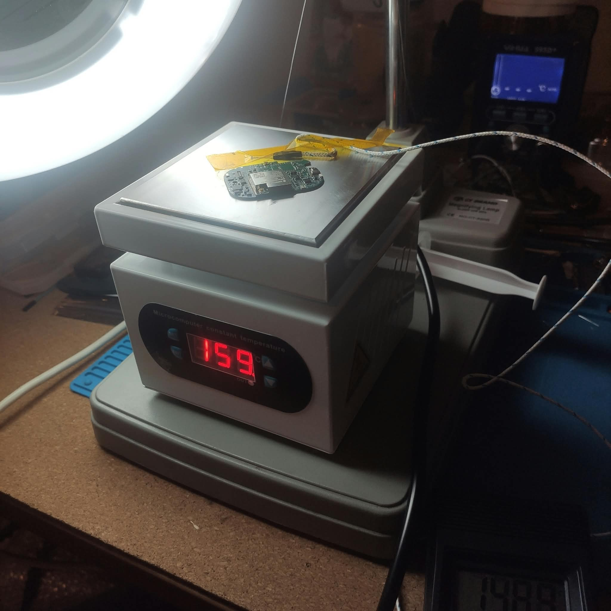
Stage 1 proved the core power rails: the 3.19 V main buck rail, the 1.78 V sensor LDO rail, and clean USB enumeration on the ESP32-S3. Initial testing surfaced the first trap: the PCF85063A RTC failed to respond on I²C Bus 1, because excess solder on its DFN-10 exposed center ground pad bridged to adjacent signal pins.
Stage 2's localized hot-air reflow brought up the primary sensor array, and with it two early lessons in hardware debugging:
- The Phantom Dead Peripheral. An "alive-but-stuck" MSM261 PDM microphone turned out not to be a dead mic chip, but a cold solder joint at the ESP32 controller pad. Reflowing the MCU pin brought the audio stream to life.
- Bench Magnetic Interference. The LIS3MDLTR magnetometer showed a hard −4 G full-scale saturation on its X-axis. Wave-testing with a small magnet proved the die was fine — the saturation came from magnetized bench tweezers and hot-air tools.
Sources: Stage_1_Build_Report.md, Stage_2_Build_Report.md, Schematic_Audit_Stage1_iv7.1_2026-06-18.md
2. The Bench Battles: 5 Critical Bugs of iv7.1
Stage 3 brought up the daughterboard (MAX30101 PPG + TMP117) and the microSD card slot — and the iv7.1 prototype hit a wall of critical board bugs.
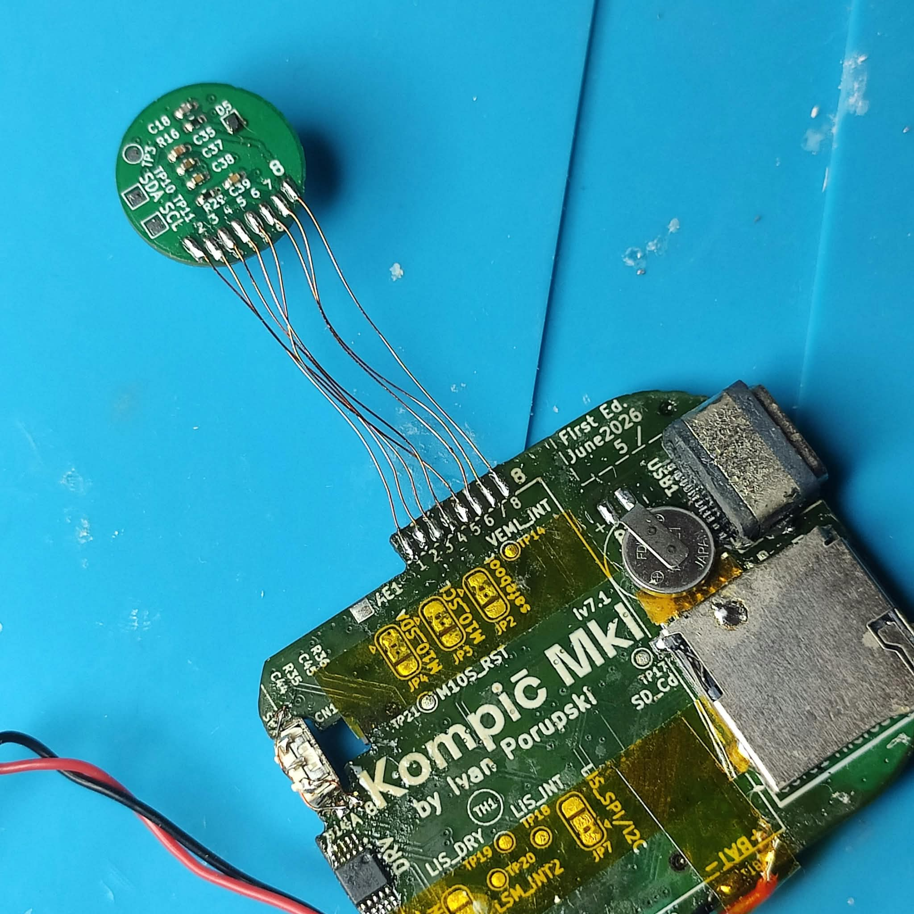
The daughter board is attached using eight 0.1 mm enamel wires. While this thin wire is somewhat brittle and prone to fatigue, its compact size allows it to fit easily into the limited space.
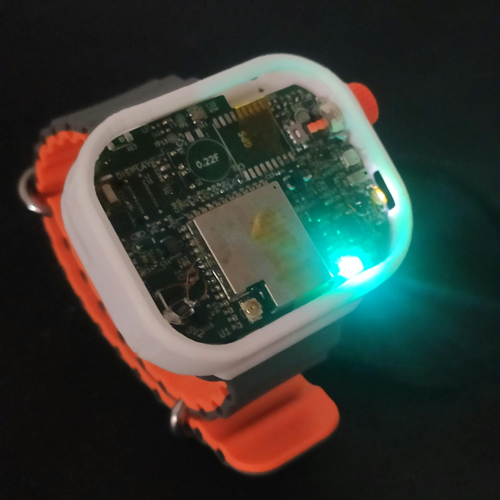
Bug #1: The Source-Follower Flashlight
The flashlight LED was driven by a BSS138W N-FET, wired on the source side — a source-follower topology. Gate drive from the MCU could never exceed the LED forward voltage, so it never lit — instead, as above, it leaked a faint constant glow.
Bench fix: traces cut and jumpered to a low-side switch. A later batch of BSS138W FETs showed die-level sub-µA leakage causing the same glow all over again, so it was swapped for a BC847C NPN transistor.
Bug #2: The Great SDMMC "Phantom" Failure
SD card init consistently timed out on send_scr and
send_op_cond. Weeks went into decoupling caps, ground bodges, and CLK
series resistors before the real cause surfaced: a fresh 32 GB SDHC FAT32
card passed 65/65 at 20 MHz on the original iv7.1 routing. The
"unfixable bus fault" was a dying 64 GB exFAT-formatted card.
Bugs #3–5: The Rail Killer and the Fried PPG
The XC6206 1.8 V LDO's library symbol had VIN/VOUT swapped. At the same time, VDDIO for the LSM6DSV16X and BME688 was tied to the +1V8 rail while their I²C lines ran at +3.3 V — internal ESD clamp diodes back-fed +3.3 V into +1V8, spiking it to 2.3–2.8 V and killing the MAX30101 (2.0 V absolute max).
Bench fix: the LDO was unsoldered, rotated 180°, and re-landed. The
+1V8 copper branch was cut over C29, sensor VDDIO jumpered to +3.3 V, and a
fresh MAX30101 fitted — it responded immediately at 0x57.
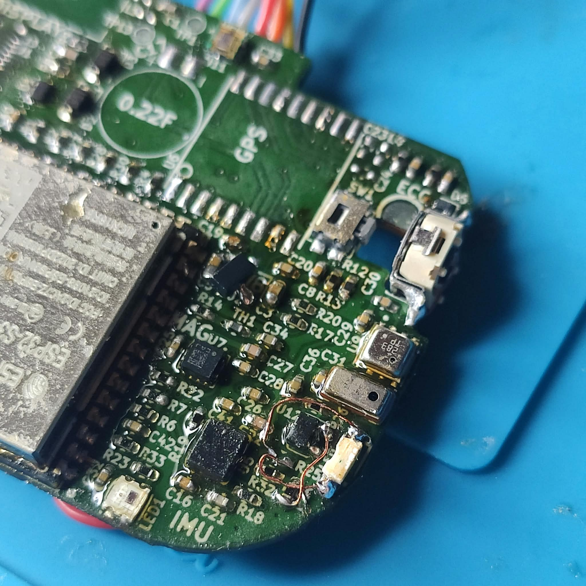
Bugs #6–7: Ship-Mode Loop & USB-C Reversibility
The BQ25619's /QON pull-up (R12) was tied to +3.3 V, so ship
mode collapsed the rail to 0 V and immediately re-woke the board. Lifting R12
let the charger's internal 200 kΩ VBAT pull-up handle ship-mode
cleanly. Separately, iv7.1 only routed one D+/D− pair, breaking USB-C cable
reversibility.
The LIS3MDLTR also picked up an internal latched axis saturation — cleared without desoldering by rotating a neodymium magnet in a decaying circular pattern near the chip.
Sources: Stage_3–5_Build_Report.md, SDMMC_Rescue_Plan_iv7.1.md, 2026-07-09_flashlight_led_leak_diagnostic.md, 2026-07-09_magnetometer_dead_channel_diagnostic.md
3. Firmware Expansion and the Fatal Display Flaw
With iv7.1's hardware stabilized via bodges, focus moved to software — porting from Arduino sketches to a modular ESP-IDF framework.
Dynamic Frequency Scaling and VBUS-aware light-sleep dropped idle draw from 106 mA to 81 mA — a +47% runtime gain (2h 44m continuous logging). A twin PPG+BCG heart-rate pipeline landed, along with raw 200 Hz PPG/BCG recording.
Stage 16: The Showstopper
The CO5300 2.06" AMOLED display and its 24-pin FPC receptacle arrived. Soldered on, panel plugged in, test sketch flashed —
The screen stayed pitch black.
Post-mortem: the receptacle footprint on iv7.1 was drawn mirrored. Panel FPC Pin 13 (GND) landed on PCB Pin 1 (QSPI_RESET). Rotating either part by 180° didn't help — the flex cable had single-sided contacts. Flying 14 fine wires for 40 MHz QSPI signals was ruled too fragile. Display bring-up on iv7.1 was a dead end. Time to spin Mk1b iv8.0.
Sources: Stage_11–13, Stage_16_AMOLED_Receptacle_Mirror.md, Stage_17_Firmware_Polish_Prep.md
4. Re-Blueprinting: the Birth of Mk1b (iv8.0)
The board wasn't the only thing back at the drawing board. The case has been going through its own run of iterations in parallel with the PCB redesign — a titanium two-piece shell with zero assembly screws and full internal retention turns out to be its own multi-week project, on its own timeline.
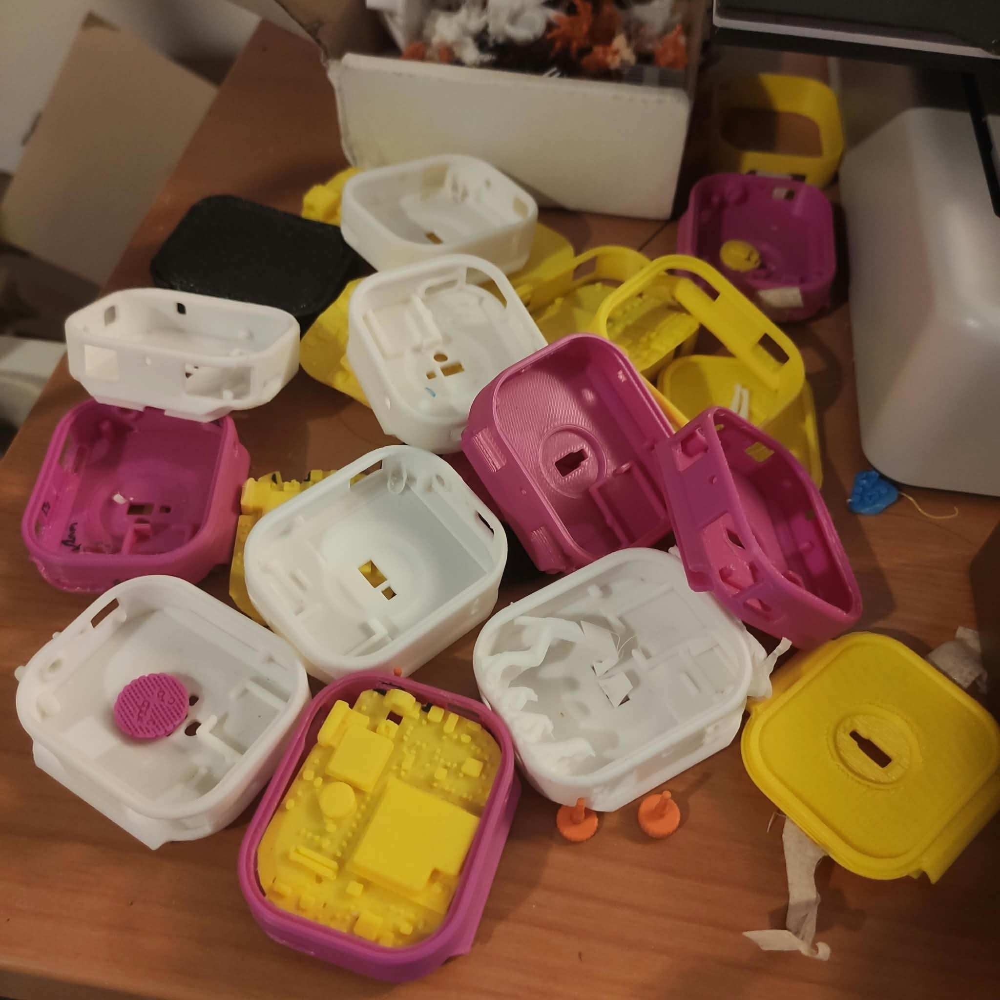
Every lesson from iv7.1 also went into a pre-fab checklist and schematic audit for Mk1b:
| Feature / Issue | Mk1 (iv7.1) | Mk1b (iv8.0) fix |
|---|---|---|
| AMOLED footprint | Mirrored (GND↔RST) | Flipped & verified by 1:1 physical lay-across |
| XC6206 LDO symbol | VIN/VOUT inverted | Symbol pinout corrected in KiCad library |
| Sensor VDDIO | Tied to +1V8 (back-fed) | Routed to +3.3 V (matches I²C bus) |
| Battery telemetry | Raw voltage via BQ25619 | MAX17048G fuel gauge added on I²C Bus 2 |
| Flashlight driver | BSS138W N-FET (die leak) | BC847C NPN + 3 kΩ base resistor |
| USB-C data lines | Single D+/D− pair | Dual D+/D− pairs tied (A6↔B6, A7↔B7) |
| Assembly discipline | Multiple hot-air rework rounds | JLCPCB 0402 assembly + single-pass IC reflow |
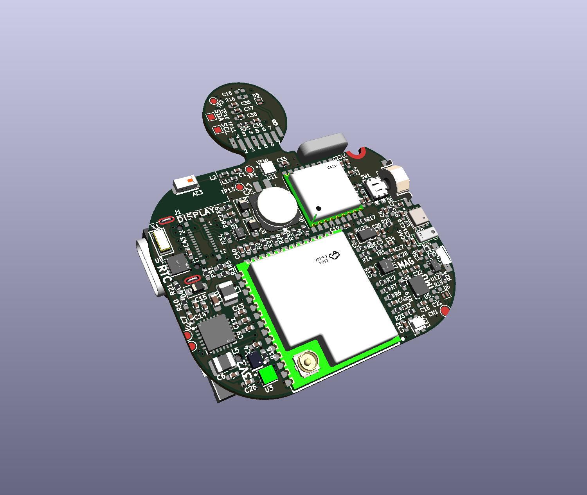
In parallel, the UI was rebuilt on LVGL 9: a 10-tile horizontal carousel (Home, GPS, Health, Environment, Compass, IMU, and more), a dual-mode GPS tile with an "Under-the-Hood" NMEA view and a high-contrast "Photo View," and Space Grotesk typography throughout.
Sources: Mk1b_fix_list.md, Mk1b_schematic_audit_iv8.0.md, pre_fab_checklist.md, Stage_18, Stage_21
5. Mk1b Bring-up, Display Triumph, and the GPS Silence Mystery
The Mk1b PCBs arrived. Assembly followed a strict order: power path → ESP32 SoC → topside I²C sensors → peripherals → AMOLED → GPS.
Footprint constraints on this revision meant the skin-facing daughter board (MAX30101 + TMP117) had to be flying-wired on with 0.1 mm enamel magnet wire — the same treatment the GPS module would need further down the line.
A minor USB D+/D− trace short on the test pads was resolved, restoring USB CDC-JTAG enumeration. Then the critical test: flash the display firmware, mate the AMOLED.
The CST9217 touch controller ACKed at 0x5A, the CO5300
initialized over QSPI in 690 ms, and the screen lit up.
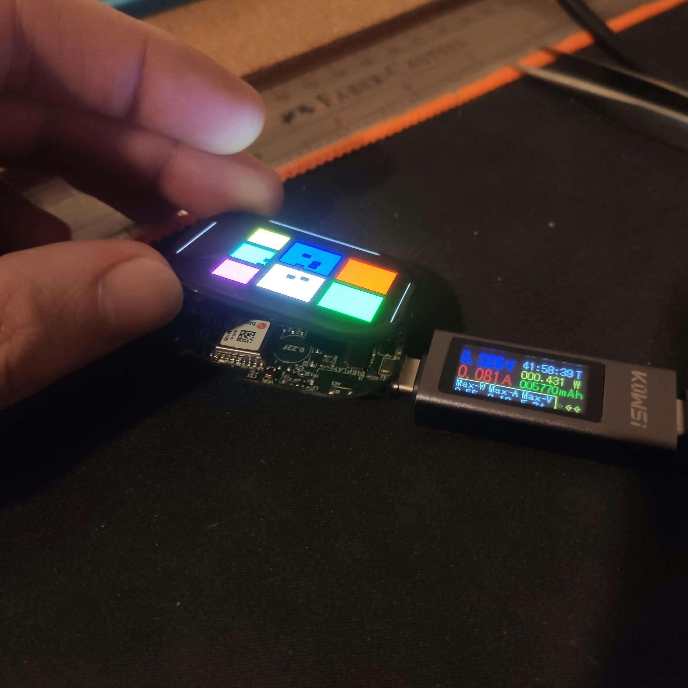
The BQ25619 charger and the new MAX17048 fuel gauge came up next, correctly reporting cell voltage and state-of-charge over I²C Bus 2.
The Great GPS Silence Mystery
The u-blox MAX-M10S was bodged on with 0.1 mm enamel magnet wire and a 1 cm 50 Ω coax pigtail to the external patch antenna.
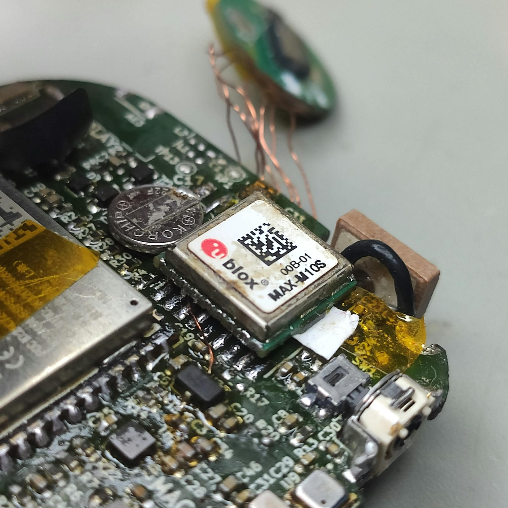
Powered up: complete silence. The scope showed clean 9600-baud squarewaves out of the module's TX pin. The same module on an ESP32-C3 SuperMini decoded NMEA perfectly. On both the Mk1 and Mk1b ESP32-S3 boards, the UART peripheral registered zero bytes.
The cause, buried in max_m10s.h:
TX and RX were completely inverted relative to the Master Pinout spec —
GPIO17 is U1TXD (ESP → GPS RX), GPIO18 is U1RXD (ESP ←
GPS TX). With the header swapped, uart_set_pin() configured GPIO18
as an output and drove it straight into the GPS module's own TX pin. Every
previous "swap the wires" test had moved physical wires without recompiling the
inverted firmware defaults — so no combination could ever have worked.
Fixing the pin definitions unblocked it instantly:
Clean NMEA at ~289–370 B/s, no hardware trace cuts or pin bodges needed on the GPS UART.
Sources: Stage_24–27, GPS_M10S_Fixing.md
6. Current Status
Kompic̄ Mk1b (iv8.0) is a fully operational wearable prototype:
- All 10 I²C devices ACK cleanly:
0x10VEML,0x1CLIS,0x36MAX17048,0x48TMP,0x51PCF,0x57MAX30101,0x5ACST/DRV,0x6ABQ,0x6BLSM - 2.06" CO5300 AMOLED + CST9217 touch drive a smooth LVGL 9 UI — auto-sleep after 15s, touch/button wake gates, Space Grotesk typography
- MAX-M10S GPS runs reliably on UART1 (TX=17, RX=18, 1PPS=46), processing UBX-NAV-PVT frames, logging UBX-MON-RF, dynamic nav-model switching, and syncing UTC to the PCF85063A RTC on satellite lock
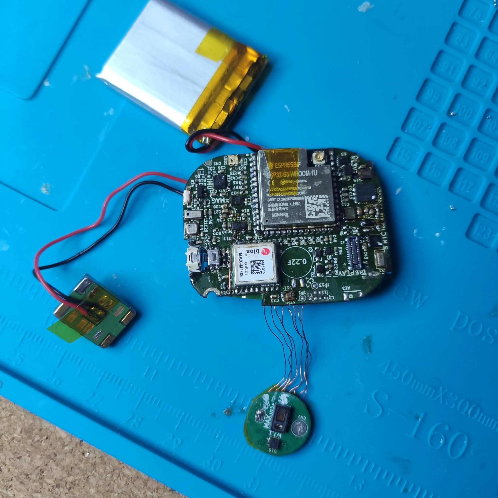
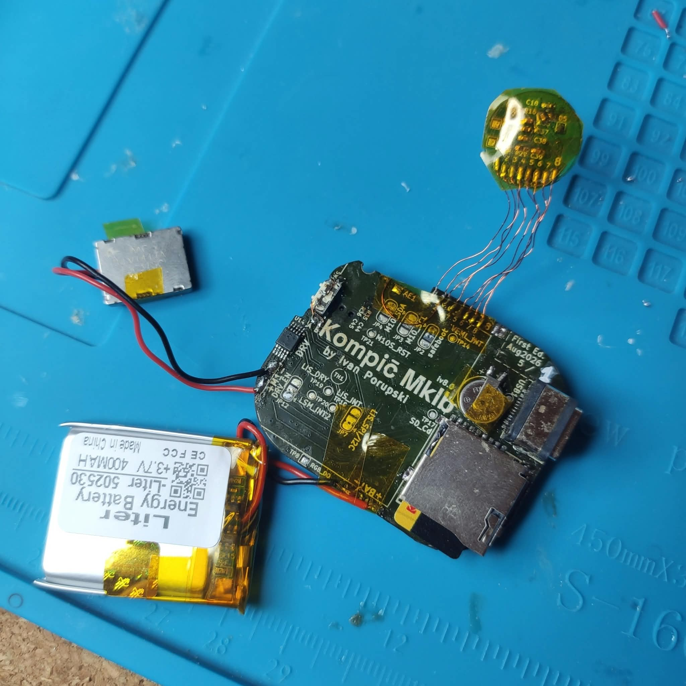
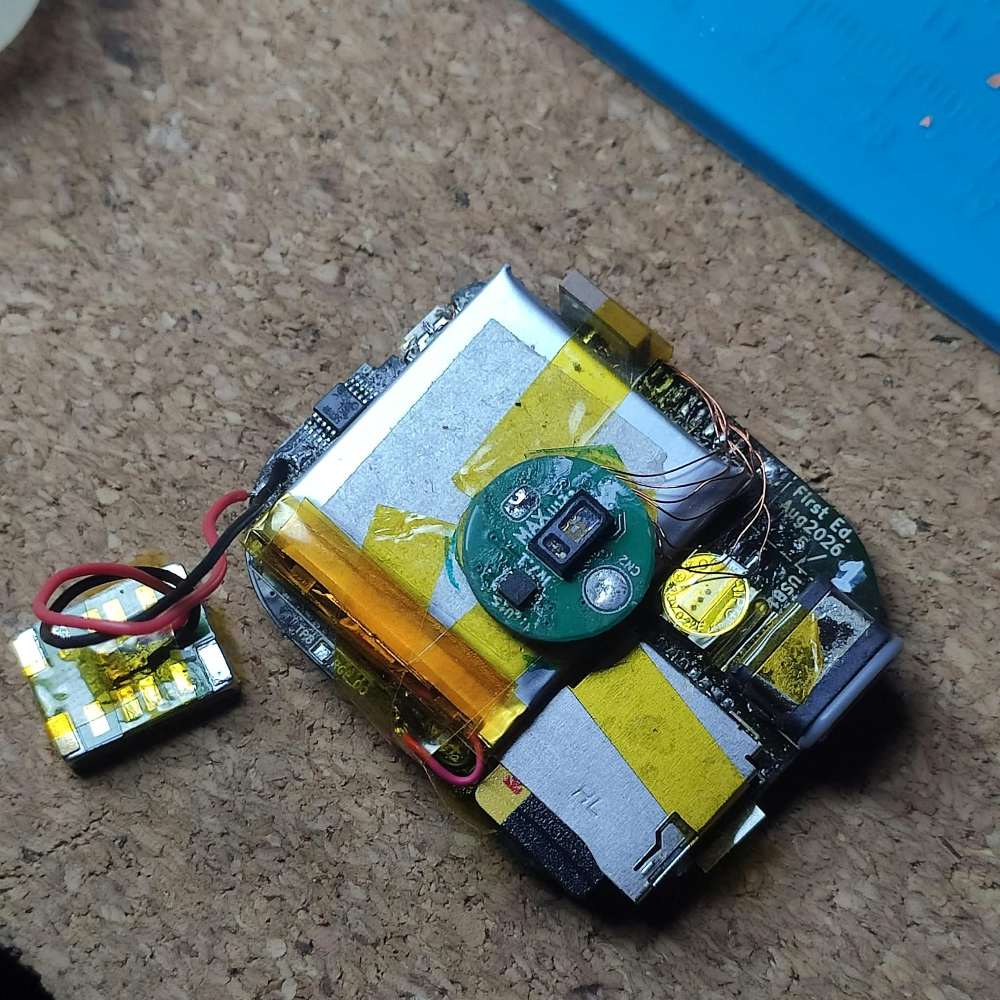
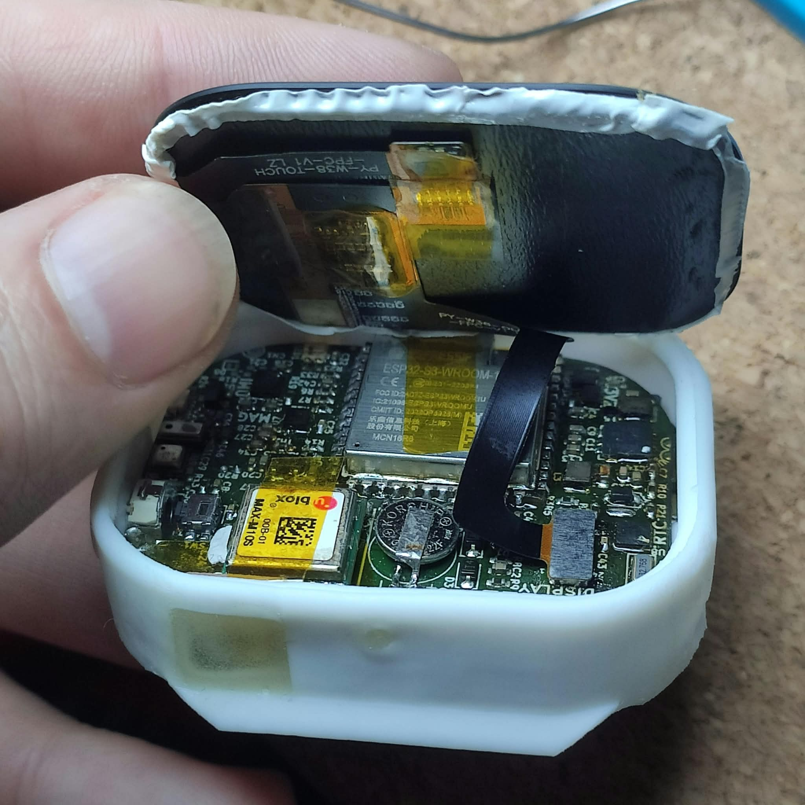
With GPS active and hardware verified end-to-end, the project moves to outdoor field trials, tile sweeps, and fitting the enclosure. The watch board and case weigh in at 33 g, coming to 56 g total with the chosen silicone straps. More stages get appended here as they happen.
Sources: Stage_31–32, GPS_M10S_Fixing.md
Status: Kompic Mk1b is going to Australia!
-> September-October 2026, InterSpeech2026 Conference in Sydney, Australia.